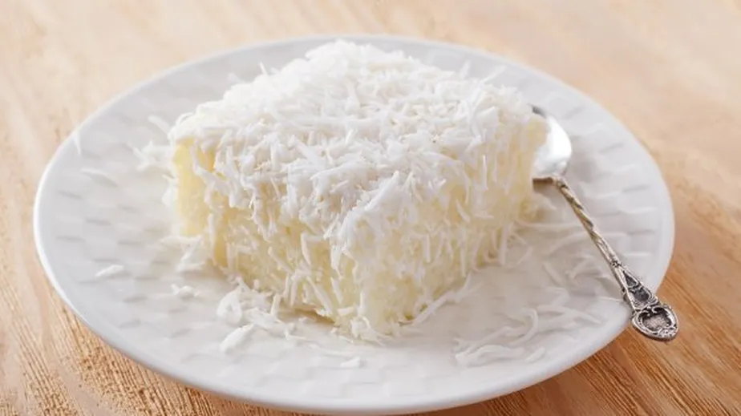

 Ingredientes: Massa 4 ovos 2 xícaras de chá de farinha de trigo 1 xícara de chá de açúcar 1 xícara de chá de leite 2 colheres de sopa de margarina ou manteiga sem sal colheres de sopa de coco ralado para a massa 1 colher de sopa de fermento em pó Modo de preparo: Massa Em um liquidificador, misture os ovos, leite, margarina ou manteiga, açúcar e as duas colheres de coco ralado. Bata até mistura bem; Despeje a mistura em uma vasilha e adicione aos poucos a farinha de trigo e vá mexendo com uma espátula ou colher grande; Quando virar uma massa homogênea, acrescente o fermento e misture devagar; Espalhe a massa em uma forma anti-aderente untada com farinha e manteiga; Asse em forno pré-aquecido por 40 minutos ou até dourar. Agora, vamos para a preparação da calda?😋 Ingredientes: Calda 1 xícara de chá de coco ralado 1 lata de leite condensado 200 mililitros de leite de coco Modo de preparo: Calda Misture bem o leite condensado e o leite de coco Despeje a calda por cima do bolo e polvilhe o coco ralado Corte o bolo em pedaços quadrados, embrulhe com plástico filme ou papel alumínio e deixe no congelador por duas horas; É isso gatíssimos, nos vemos na próxima receita com Lilith!